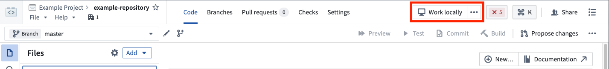
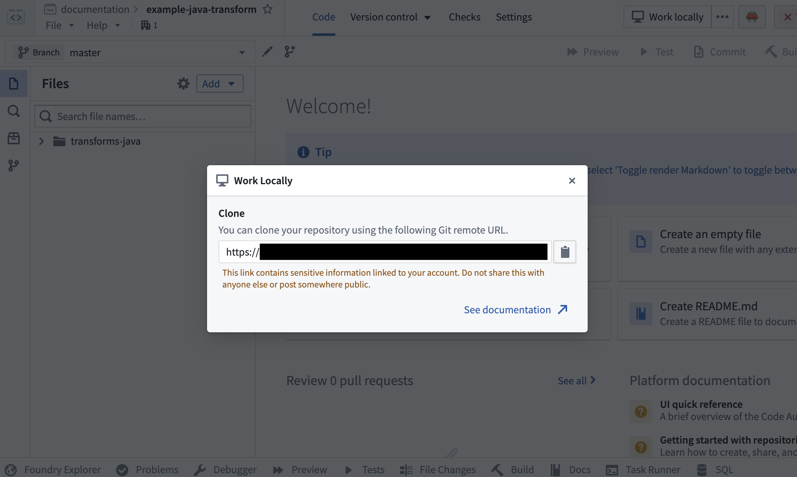

It is possible to carry out local development of Transforms Java repos, allowing for high-speed iterative development.
:::callout{theme="warning"} The repository URI (git remote URL) contains sensitive information linked to your account and should not be shared. To maintain platform security, do not share this link with anyone else or post it publicly. :::


git clone <URI> on your local machine in a directory of your choice. Then use the cd command to navigate to the repository.Dataset Previews are supported in local development. See Local preview for more details.
JAVA_HOME points to the right Java installation. You can download Java 17 from the Oracle website â.:::callout{theme="neutral"}
Setting the JAVA_HOME environment variable based on your operating system:
SETX JAVA_HOME -m "<java-home-dir>" in PowerShell. This modifies the system environment variable and you will need to restart the shell for changes to take effect. Alternatively you can run [System.Environment]::SetEnvironmentVariable("JAVA_HOME", "<java-home-dir>") to set JAVA_HOME in the running process.Linux or macOS: Run export JAVA_HOME=<java-home-dir>.
:::
Ensure you repository is upgraded to the latest template version by following the steps outline here.
cd and run ./gradlew openIdea. This Gradle task will generate an IntelliJ Idea project and open it../gradlew openIdea command must be run from Git BASH, which is included in Git for Windows â../gradlew, rather than using IntelliJ's Gradle plugin.